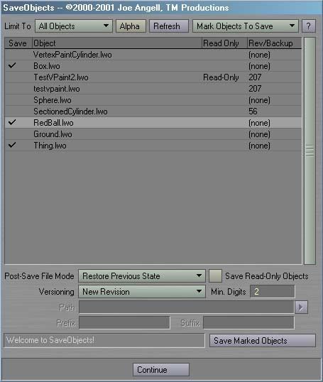
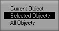
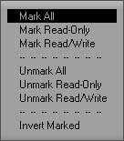
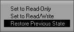
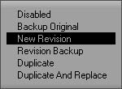

|
To install SaveObjects, just follow these steps:
SaveObjects includes the following plugins: Save Objects
Save Objects, the core plug-in, provides an interface for selecting and saving objects. It includes features for optionally overwriting read-only files, as well as setting the files to read-only or read-write after they have been saved. A series of versioning features allow for creating backups, incrementing revisions, revision backups and duplicating the object on disk.  After running Save Objects, you should see an interface similar to the one above. In simplest terms, Save Objects is used by marking the objects you want to save, choosing a Post Save File Mode, a Versioning Mode, maybe enabling Save Read-Only Objects and finally clicking Save Marked Objects to begin processing. Clicking Continue will exit the plug-in without doing anything. The ? button at the top-right will open the About Save Objects panel. The lister contains four columns detailing objects from the scene. Which objects are listed is determined by the Limit To pop-up. Clones and null objects are automatically culled out of the list, so you don't have to worry about them. The first column is used to mark an object for saving. You can click in this column to mark or unmark an objects. The second column displays the object's name. The third column shows if this object is read-only on disk. The final column is specific to the versioning mode, and will display the latest revision number on disk, or show if there's a duplicate or backup exists.  The Limit To pop-up allows you to limit which objects are shown in the lister. The options are All Object, meaning all objects will be displayed in the lister, Selected Objects, which limits the display to just the objects selected within Layout, and Current Object, which shows only the most recently selected item in Layout. Clones and null objects will never be displayed. Note that changing the Limit To mode will unmark any previously marked objects. If Alpha is active, the lister will be sorted alphabetically. Otherwise, the objects are listed in natural order, meaning the same order the objects were loaded into Layout Refresh can be used to update the columns of the lister, in case something has changed on disk between since the last time the list was refreshed.  The Mark Objects To Save pop-up allows you to quickly mark objects to be saved from basic criteria. Only objects that are marked will actually be processed when Save Marked Objects is clicked. You can also click in the Save column in the lister to mark individual objects to save. Use Mark All to mark all objects for saving, and Unmark All to save nothing. Mark Read Only and Unmark Read Only will mark or unmark objects that are read-only on disk. Mark Read/Write and Unmark Read/Write will mark or unmark objects that can be both read and written on disk. Invert Marked will set all marked objects to unmarked, and visa-versa.  The Post-Save File Mode pop-up determines what the read-only state of any object will be after it has been saved. It can be set to Read-Only, thus write protecting the file on disk, or Read/Write, allowing you to save over, rename and delete the object without having to change it's fine attributes. The final mode, Previous State, will return the object to it's previous file mode after saving it; for example, if the object was originally read-only, it will again be read-only after it is saved. Note that this state affects all files saved or modified by the Versioning Mode, including backups and duplicates. If a particular Versioning Mode doesn't modify the original object, it's attributes won't be affected. Save Read-Only Objects, when enabled, allows read-only objects to be overwritten. If this is disabled, only objects listed as read/write will be saved.  Versioing Mode provides alternate ways to save your objects. The default mode, Disabled, does nothing special; it simply saves the object to disk, just like saving an object from Layout. The Rev/Backup column of the lister will change depending on the mode selected. Backup Original will rename the original object on disk to end in .lwo-bu, then save the object from Layout to disk under the original name. If a backup already exists on disk, it will be deleted before the original object is renamed. Since the backup's name ends in .lwo-bu, it won't show up in the normal Load Object file requests from Layout, so it won't clutter up your view too much. When this Versioning Mode is selected, the Rev/Backup column of the lister will display Backed Up if a backup exists on disk. New Revision will a new, uniquely-reivisioned object to disk. The Min. Digits field determines both the minimum number of digits that will be saved, and the minimum number of digits that must already exist at the end of the object's name for it to be considered a revision. For example, if the object is named Test2.lwo and Min. Digits is set to 2, then no revision will be recognized. If the object was named Test02.lwo, however, then a revision of 02 will be found. The latest revision number found on disk will be displayed in the Rev/Backup column of the lister, even if that number is greater than that currently loaded into Layout. If no revisions exist, the column will show (none). Note that the original object will not be modified in any way. The following table shows how revisions are added to objects based on their name and Min. Digits. Of signifigance is that if the name ends in digit, but it isn't considered part of the revision due to Min Digits, then a dash will be insterted before the revision is added.
Revision Backup is similar to the New Revision mode. Instead of creating a new revision in the same directory as the original object, it creates the new revision in the directory specified by the Path field, as well as saving over the original object. This means that the object in the "main" directory will have the same name and always be the most recent version, but revisions will also be stored in the backup directory specified in the Path field. Note that if Path is a relative path, meaning that it has no drive part, the revision will be saved in a new directory relative to the object's original directory. If the path is absolute, then all the revisions for the marked objects will go there. If the path doesn't exist, it will automatically be created. If no revisions exist for the object at Path, the original object is also revisioned by coping it to the backup path as revision 0. Duplicate and Duplicate And Replace will create a duplicate object. The object can have a Prefix or Suffix added to it, and can be duplicated to a different location via the Path field. Relative and absolute paths acts similarly to Revision Backup mode. In Duplicate mode, the object is saved under a new name, but the object in Layout isn't replaced, similar to Layout's built-in Save Object Copy command. Duplicate And Replace will save the object in a new path and replace the object in Layout with it. Note that neither of these modes affect the original object in any way. As mentioned above, Min. Digits, Path, Prefix and Suffix are used by specific Versioning Modes. The following table outlines which modes use which fields:
When you have all your objects marked and options set, click Save Marked Objects to start saving. If something is wrong, such as all files are read-only but Save Read-Only Objects is disabled, you will be presented with an error message and the status field will turn red. If some other error occurs to a particular object during processing, an object-specific error message will appear, but processing will continue. As objects are saved, the status field draws a progress bar and displays the name of the object that is currently being saved. You can then click Continue to return to Layout.
Backup And Save Object
|